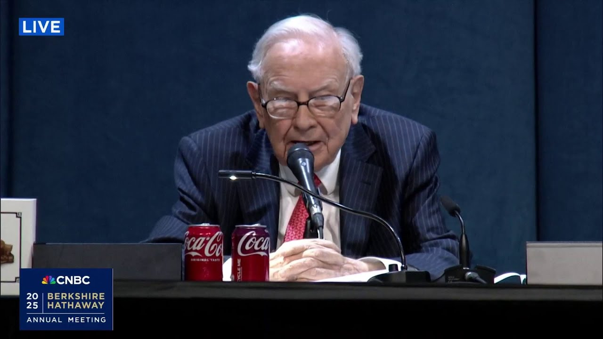

来B站一起耍【Global每日英语简报】
【沃伦·巴菲特抨击关税和保护主义：“贸易不应成为武器”】
Summary: Warren Buffett explains his past proposal for import certificates to balance trade deficits, distinguishing it from tariffs, and argues against using trade as a weapon, advocating for global prosperity and balanced trade.
摘要： 沃伦·巴菲特解释了他过去提出的进口凭证提案以平衡贸易逆差，将其与关税区分开来，并反对将贸易作为武器，主张全球繁荣和平衡贸易。

⏱️ Estimated Reading Time: 6 min
This first cut question comes from Bill Mitchell.
第一个问题来自比尔·米切尔。
I received more questions about this than any other question.
我收到关于这个问题的问题比其他任何问题都多。
He writes, "Warren, in a 2003 Fortune article, you argued for import certificates to limit trade deficits and said these import certificates basically amounted to a tariff.
他写道：“沃伦，在2003年《财富》杂志的一篇文章中，你主张用进口凭证来限制贸易逆差，并说这些进口凭证基本上等同于关税。
But recently you called tariffs an act of economic war.
但最近你称关税是一种经济战争行为。
Has your view on trade barriers changed or do you see import certificates as somehow distinct from tariffs?
你对贸易壁垒的看法是否改变了，还是你认为进口凭证在某种程度上与关税不同？”
Yeah, well the import certificates were distinct but they they their goal was to balance u imports against exports and so that the trade deficit would not grow in an enormous way.
是的，进口凭证是不同的，但它们的目标是平衡进口与出口，从而使贸易逆差不会大幅增长。
In fact, it would have and it had various other provisions in it to to help uh uh third world countries as that time as they were called to perhaps catch up a little bit.
事实上，它本可以并且其中包含了各种其他条款，以帮助当时的第三世界国家，或许能让它们稍微赶上一点。
uh and they they had a variety of aspects to them, but basically they were designed to balance trade and uh I think you can make some very good arguments for the fact that balanced trade is good for the world and the more balanced trade there is the better.
它们有多个方面，但基本上是为了平衡贸易，我认为你可以提出一些很好的论点，说明平衡贸易对世界有益，贸易越平衡越好。
It will continue to be better for cocoa to be raged in Ghana and coffee and Colombia and a few things.
加纳的可可、哥伦比亚的咖啡和其他一些东西继续发展会更好。
And and over time the uh American industry has gone from being an agricultural country.
随着时间的推移，美国工业从一个农业国家发展起来。
This was this was nothing but an egg country.
这曾经只是一个产蛋的国家。
I mean that uh virtually uh and that was only 250 years ago.
我是说，实际上那只是250年前。
And we have become a very industrial country and uh we did not want to make that a situation uh in my view uh where we ran uh greater and greater deficits building up greater and greater debts against the country.
我们已经成为一个非常工业化的国家，在我看来，我们不想让这种情况变成我们不断积累越来越大的逆差，对国家积累越来越多的债务。
So I I designed this uh import certificate thing which uh Charlie thought was a little rub too much like Rub Goldberg.
所以我设计了这个进口凭证的东西，查理认为它有点像鲁布·戈德堡的发明。
I don't know whether that time name is but it's gimmicky but uh it's certainly a lot better than anything I I think than we're talking about now and there's no question that trade trade can be an act of war and uh and I think it's led to bad things just the attitudes it's brought out uh in the United States.
我不知道那个名字是否正确，但它有点花哨，但它肯定比我们现在讨论的任何东西都好得多，毫无疑问，贸易可以是一种战争行为，我认为它在美国引发了一些不好的态度。
I mean, we should be looking to trade with the rest of the world and we should do what we do best and they should do what they do best and uh I don't think it that's that's what we did originally.
我的意思是，我们应该与世界其他国家进行贸易，我们应该做我们最擅长的事情，他们应该做他们最擅长的事情，我不认为这是我们最初所做的。
I mean, we were good at producing tobacco and cotton uh uh 250 years ago and we and we traded it and uh uh we want a prosperous world uh with eight countries with nuclear weapons, including a few that are what I would call quite unstable.
我的意思是，250年前我们擅长生产烟草和棉花，我们进行了贸易，我们希望一个繁荣的世界，有八个拥有核武器的国家，其中一些我认为相当不稳定。
I do not think it's a great idea to try and design a world where a few countries say, "Haha, we've won."
我不认为设计一个少数国家说“哈哈，我们赢了”的世界是个好主意。
And uh uh other countries uh are envious.
而其他国家则嫉妒。
So, so my my my import certificate idea which went no place.
所以，我的进口凭证的想法没有取得任何进展。
Uh uh I think we got extra copies probably not a great demand for the copies.
我想我们有多余的副本，可能对副本的需求不大。
Uh if anybody and if you'd like and write the office, I think we could we could probably send you a copy of it.
如果有人想要，可以写信给办公室，我想我们可能会给你寄一份副本。
But the main thing to do is not use trade should not be a weapon.
但最重要的是不要将贸易用作武器。
And the United States, United States, we've won.
美国，美国，我们已经赢了。
I mean, we have become an incredibly important country starting from nothing.
我的意思是，我们从一无所有开始，已经成为一个非常重要的国家。
250 years ago, there's nothing been anything like it.
250年前，没有任何国家像我们这样。
And it's a big mistake in my view when you have 7 12 billion people that uh don't like you very well and you got 300 million that are crowing in some way about how well they've done.
在我看来，这是一个巨大的错误，当你有70亿或120亿人不太喜欢你，而你有3亿人以某种方式吹嘘他们做得有多好。
And uh uh I don't think it's right and I don't think it's wise.
我不认为这是正确的，也不认为这是明智的。
Uh I do think that the more the more the more prosperous the rest of the world becomes, it won't be at our expense, the more prosperous we'll become and with and the the the safer we'll feel and your children will feel someday.
我确实认为，世界其他国家越繁荣，不会以我们的利益为代价，我们也会变得更繁荣，我们会感到更安全，你的孩子有一天也会感到更安全。
Uh, so that's but don't ex don't expect my import certificate idea to go to up down there with Adam Smith's wealth of nations or anything.
所以，但不要期望我的进口凭证的想法能与亚当·斯密的《国富论》相提并论。